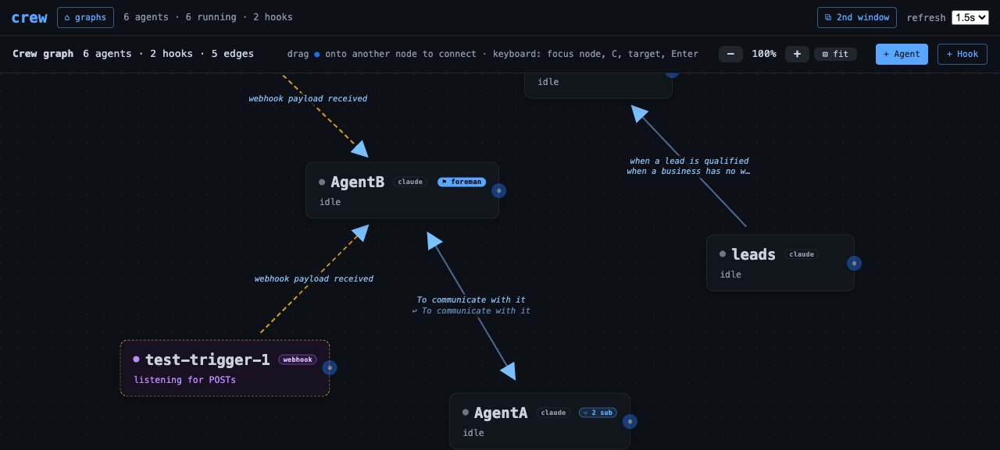
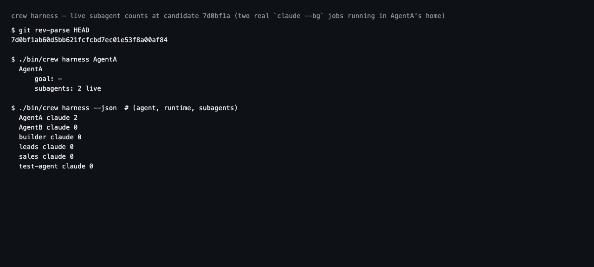

Each agent card and 'crew harness' show how many live subagents the agent's coding harness is running under it, read from Claude Code, Codex, and Hermes state.
Feature IDharness-subagent-badges
Created2026-07-27
Surfacescli, dashboard
Dependenciesharness-introspection
User flow
Start state
An agent quietly fans work
out to subagents — background Claude Code sessions, Codex spawned
threads, Hermes async delegations — and the graph shows one card doing
one thing. The operator only discovers the fan-out by opening the
agent's terminal.
Outcome
The card's name row grows a
⑂ 2 sub badge whenever the agent's own harness
reports live subagents, on the same poll that paints status; the badge
disappears when they finish. crew harness prints the same
count under each agent's goal, and --json carries it as
subagents.
Architecture
Each reader counts live subagents from its harness's OWN
durable state — Claude Code's session registry rows marked
kind:"bg" with a live pid, Codex's non-terminal
thread_spawn_edges under the home's threads, Hermes's
async_delegations in running/finalizing —
normalized by the Harness base class into
HarnessState.subagents (int, or None for "no reading").
The dashboard attaches it to /api/graph/snapshot agent
rows; the card badges counts > 0.
Public interface
Commands and APIs
crew harness [name] [--json] — each supported agent's
block gains subagents: N live when N > 0; JSON rows
always carry subagents (int or null).
GET /api/graph/snapshot — agent rows gain
subagents on the existing poll; no new endpoint.
Python: Harness.read_subagents(home) (default None) and
HarnessState.subagents.
Data and lifecycle
Nothing new is
persisted. Every reading is a point-in-time count from the harness's
own store, opened read-only with the same short-timeout discipline as
goal reads; the badge lives exactly as long as the harness reports
the subagent live. None (no reading) is distinct from 0 (none live)
and never badges.
Security and failure boundaries
Authority
Read-only introspection of
state the operator already owns on this machine; no agent
cooperation, no TUI driving, no writes to any harness store. Only a
bounded integer crosses to the browser — no subagent names, prompts,
or transcripts enter the graph payload. Unsupported runtimes report
no count rather than a false 0.
Failure behavior
A reader that
breaks — missing store, schema drift (e.g. a Codex install that
predates thread_spawn_edges), corrupt sqlite — degrades
that agent's subagents to None without disturbing its
goals, and probe still never raises, so the snapshot and
the poll loop cannot be taken down by a harness release.
Rollout and reversal
Additive and dependency-free: old dashboards ignore
the extra snapshot field, the CLI line only appears when a count is
positive, and the Harness base default (None) keeps any
out-of-tree reader honest without changes. Reversal is deleting the
read_subagents implementations, the snapshot attach, the
CLI line, and the badge markup/CSS — no data migration in either
direction.
Ran 1230 tests in 207.8s at the candidate
revision. The three failures and one error are pre-existing on main
(two dashboard tests, one live-foreman environment fixture) plus the
webhook base-URL test that fails while a live public ingress tunnel
is running; nothing else red, no regressions from this feature.
python3 -m unittest tests.test_harness
Ran 73 tests in 0.24s; OK. 24 new tests pin
the subagent readings: base-class clamp/degrade contract, Claude
bg-session liveness and home matching, Codex non-terminal spawn edges
plus the no-table and no-store None cases, Hermes in-flight
delegations, and the CLI text/JSON surface.
Ran 11 tests in 0.36s against the real Claude
Code, Codex CLI, and Hermes installs on this machine, read-only; OK.
cd frontend; npx vitest run
5 files, 22 tests; OK. The new graph_layout
contract pins the badge markup: present with plural/singular tooltip
for counts above zero, absent for 0, null, and webhook nodes.
./bin/crew harness AgentA
With two real `claude --bg` jobs running in
AgentA's home: goal — / subagents: 2 live. All other live agents
reported honest zeros, and the count decayed as the jobs
finished.
Every agent row carries subagents. During the
browser run the throwaway hermes fixture agent read 2 (running +
finalizing counted, the done row excluded) while AgentA read 1 from a
real background Claude Code job.
tests/browser/subagent-badge.md (executed with agent-browser)
Badge showed ⑂ 2 sub on the hermes fixture
card, dropped to ⑂ 1 sub with a singular tooltip after one delegation
retired, and disappeared entirely on an honest zero; claude agents
with no live background sessions and webhook nodes showed no badge.
Fixture agent, state dir, and dashboard env were cleaned up.
python3 scripts/validate_feature_docs.py
feature HTML valid: 5 record(s), template present

The live dashboard at the tested revision: AgentA badges
⑂ 2 sub from two real claude --bg jobs in
its home; the foreman badge, webhook nodes, and idle agents are
unaffected.

Rendered capture of the exact commands and output at the
tested revision: crew harness AgentA reporting
subagents: 2 live and the JSON counts for every
agent.
Engineering inventory and redaction notes
Readers and normalization live in crew/harness/; the
CLI line in crew/cli.py; the snapshot attach in
crew/server/app.py; the badge in
frontend/src/graphEngine.js + app.css
(bundle rebuilt into static/). Unit tests run against
synthetic state dirs via CREW_*_STATE_DIR; the live
suite reads the real installs read-only and asserts shape, never
content. The live proof used a real claude --bg job in
AgentA's home and a throwaway Hermes state.db fixture
dir; both were removed afterwards, along with the fixture agent
test_bv_sub_hermes. This commit also rebuilt the
frontend bundle, which surfaced that emptyOutDir: true
deleted predecessors' hashed bundles pinned by earlier dossiers —
fixed here (frontend/vite.config.js), with
webhook-nodes' bundles restored; superseded assets now accumulate
by design. Screenshots show only this operator's own local graph
and CLI output; capability URLs never appear (viewport-only
captures), and no goal text, prompts, or transcripts are shown.